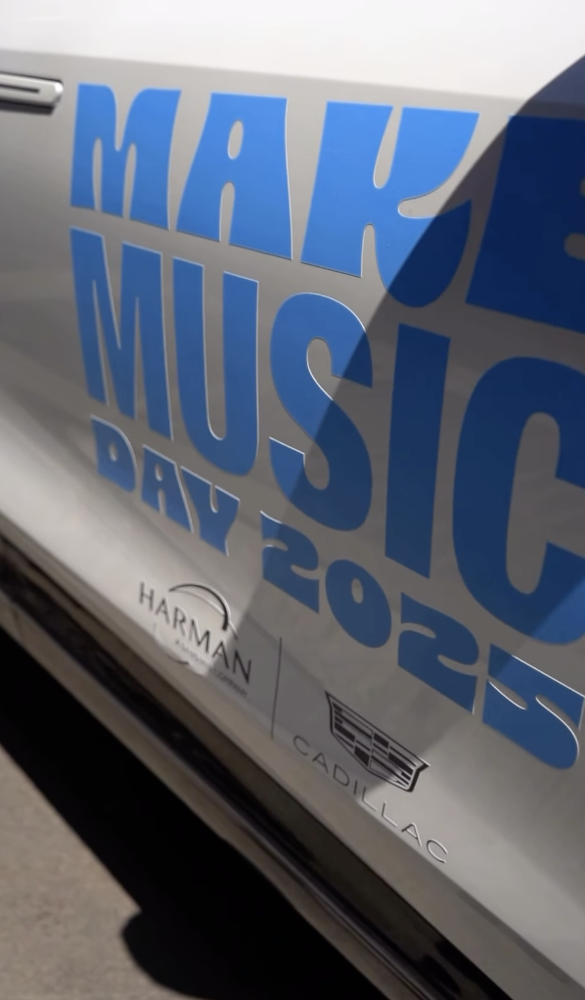

Production Company
Eagle Claw Films
Visit Website
Upcoming Project
If Not Us
View More Info
Capturing light, motion, and the raw emotion of the human experience through the lens.
View MorePatrick Civitelli is an award-winning director, cinematographer, and expert storyteller dedicated to crafting compelling narratives across both long-form film and dynamic short-form social media content. He is most known for his immersive documentaries, including "Roma WWF Superstar to Teacher," "Ascending Beyond Shadows," and his highly anticipated upcoming feature, "If Not Us." Beyond traditional filmmaking, Patrick has a proven track record of producing and editing high-impact social media campaigns that captivate digital audiences.
A recent graduate of Southern Connecticut State University, Patrick earned his degree in Communication with a concentration in Film and Television, along with a minor in Journalism. With over eight years of hands-on experience capturing photographs and videos, he is constantly adapting to stay current with the latest technology in the industry.
He holds a Part 107 drone license, utilizing the DJI Mini 3 and DJI Air 3 for aerial cinematography. On the ground, his primary camera packages include the Sony FX6 paired with a Sirui 50mm anamorphic lens, the Sony a7III with a 28-70mm lens, and the Canon C70—occasionally opting for an iPhone 16 Pro Max for agile, quick-turnaround shots. In the post-production suite, Patrick leverages over eight years of editing experience, boasting high proficiency in Adobe Premiere Pro, Photoshop, Final Cut Pro, and DaVinci Resolve.
Documentary • Coming Late 2026
If Not Us is a compelling documentary centered on the student-led movement to end school shootings. Highlighting the voices of those who have experienced these tragedies firsthand—alongside a generation that refuses to accept the status quo—the film explores the powerful intersection of grief and activism. It offers an inspiring look at how young survivors and passionate advocates are finding their courage, confronting systemic inaction, and bravely answering the call for change.
Short • 2025
"Paranormal Pursuits" is about a haunted library in Middlefield CT. My team and I spent the night to find out if it was truly haunted....
Short Doc • 2025
"Ascending Beyond Shadows" is a documentary about rock climbing. This documentary follows Tristin as he uses rock climbing to deal with hardships in his life in a positive way through this hobby. Equipment Used: Sony a7iii, Dji air 3, Dji wireless mics Edited on: adobe premiere
Short Doc • 2024
"Roma WWF Star to Teacher: A Mini Documentary" is the story of Paul Roma, a former WWF wrestler. The documentary shows how he turned his success in the ring into an opportunity to mentor students. He shares personal stories about wrestling and how that led him to teach students. Not only does he coach his student to be the best they can be he also teaches valuable life lessons . Equipment used: Canon C70, Atmos Ninja V, Monitor Rode Wireless GO II, Dracast lights. Edited on: Adobe Premiere
Explore my complete gallery of still photography, capturing the raw emotion and striking visuals of the world around us.
Click here to see photographyMe and another intern collaborated to create a social media campaign to showcase interns from our U.S. offices. We had them create “Day in my Life videos” that gave followers an inside look at their daily tasks and fun events HARMAN holds. We interviewed interns about their favorite projects at the Novi office. To creatively summarize their experiences, we designed infographics featuring a single word that captured their time at HARMAN. The campaign was supported by a blog post on the company's official website.
Social media video reel I edited in collaboration with Harman/JBL, Dolby Labs & Make music day.
Instagram Post

Visit Website
View More Info
Top Social Media Postings
Post 1 with over 615k views
Post 2 with 389.3k views
Post 3 with 26.1k views
Post 4 with 21.9k views